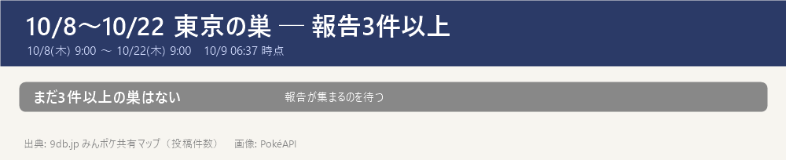

- 9db（みんポケ共有マップ）の東京都の巣：15種・のべ20か所・報告20件（10/9 06:37 に取得。3件以上の巣は0か所）
- 期間：10/8(木) 9:00 〜 10/22(木) 9:00（隔週木曜に入れ替わり・9db の開催一覧）。入れ替わり直後は報告が少ないので、数日おきに更新して育てる
- 見方：件数＝その場所で見たという投稿の数。3件以上はほぼ確実、1件だけの巣は見間違いや一時的な出現のこともある。件数は人の多い公園ほど増えやすい
- 10/9 時点：東京の報告は20件（15種）。まだどの巣も1件ずつ → 3件以上の確かな巣はまだ無い。週末に報告が増えたら更新する（「巣を更新」）
- 同じ公園の2か所で同じポケモン（当たりの可能性が高い）：城北中央公園の東側・西側がどちらもノコッチ、戸山公園（大久保地区含む）がどちらもヨーテリー
- ヌイコグマの巣が2か所：小平市立中央公園・西河原公園（各1件）。10/15(木) のスポットライトアワー（送るとアメ2倍）の前にアメを貯めておくなら候補
- 前の期間の大きな巣はこう変わった：上野恩賜公園 マクノシタ → ネイティ／城北中央公園 ポチエナ → ノコッチ／豊島区立長崎公園 ヨーテリー → ニョロモ／篠崎公園 エモンガ → ニドラン♀（いずれも1件）
- まだ報告が無い：平和の森公園・哲学堂公園・蚕糸の森公園・光が丘公園・錦糸公園（前の期間に報告が多かった所）
- 色違い：15種が色違いの出るポケモン（9db の色違いマーク）
- 天気でブースト（その天気のとき出やすく・強くなる）：曇り＝ゴクリン・ニドラン♀・ヌイコグマ／雨＝ケムッソ・コダック・シママ・ニョロモ・ミツハニー・ヤンヤンマ／強風＝ケーシィ・スバメ・ネイティ・ミツハニー・ヤンヤンマ／ときどき曇り＝シシコ・スバメ・ヌイコグマ・ノコッチ・ヨーテリー／晴れ＝シシコ
報告3件以上の巣

エリア別の全リスト
- ■城北（中野・豊島・練馬・板橋・北・上野） 6か所
- ノコッチ：城北中央公園 東側(1)・城北中央公園 西側(1)
- ヨーテリー：戸山公園(1)・戸山公園 大久保地区(1)
- ニョロモ：豊島区立長崎公園(1)
- ネイティ：上野恩賜公園(1)
- ■城西・城南（杉並・世田谷・目黒・大田） 2か所
- ケーシィ：善福寺川公園(1)
- シママ：蘆花恒春園(1)
- ■都心・湾岸 1か所
- ミツハニー：日比谷公園(1)
- ■城東（江東・墨田・江戸川・葛飾・荒川） 4か所
- ニドラン♀：篠崎公園(1)
- コダック：アクロシティ庭園(1)
- ヤンヤンマ：水元公園(1)
- ケムッソ：にいじゅくみらい公園(1)
- ■多摩 7か所
- ヌイコグマ：小平市立中央公園(1)・西河原公園(1)
- ネイティ：東大和南公園(1)
- ノコッチ：町田中央公園(1)
- スバメ：きたみふれあい広場(1)
- ゴクリン：日野市民の森スポーツ公園(1)
- シシコ：立川公園(1)
出典: 9db.jp みんポケ共有マップ（東京都の巣・投稿件数）。他サイトとは照合していない
画像: PokéAPI